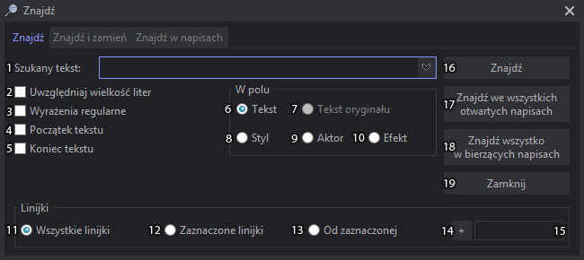
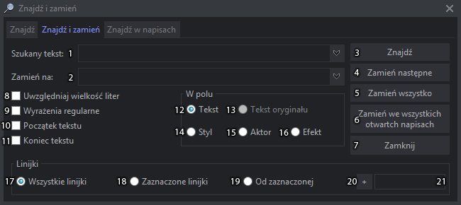
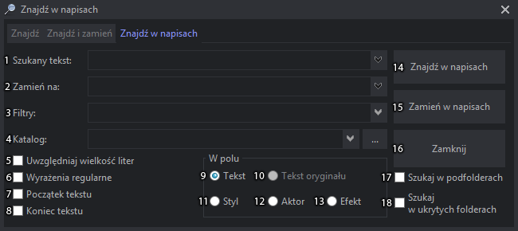

Znajdź i zmień
Okno szukania i zmieniania
Okno szukania i zmieniania zostało rozbudowane bardziej, by mogło zrobić rzeczy, które dotąd można było robić tylko skryptami Lua.
Znajdź

- Tekst którego szukamy, w przypadku zaznaczonych wyrażeń regularnych może przyjmować kod przy nich wykorzystywany.
- Zahaczenie tej opcji uwzględnia wielkość liter.
- Wyrażenia regularne jest to bardziej rozbudowany sposób szukania. Dla osób, nie mających nic wspólnego z programowaniem mogą wydawać się trudne, więc opiszę go trochę bardziej poniżej w tym temacie, bo nawet na polskiej Wikipedii za dużo o tym nie ma.
- Znajduje szukaną frazę tylko na początku tekstu, gdy pole znajdź jest puste, to znalezione zostaną wszystkie linijki.
- Znajduje szukaną frazę tylko na końcu tekstu, gdy pole znajdź jest puste, to znalezione zostaną wszystkie linijki.
- Szuka tylko w tekście linijek.
- Szuka tylko w tekście oryginału, gdy jest włączony tryb tłumaczenia.
- Szuka tylko w stylach linijek.
- Szuka tylko w kolumnie aktor.
- Szuka tylko w kolumnie efekt.
- Szuka we wszystkich linijkach napisów.
- Szuka we wszystkich zaznaczonych linijkach napisów.
- Szuka we wszystkich linijkach od pierwszej zaznaczonej linijki napisów.
- Po kliknięciu na "+" można wybrać style do których ogranicza się nasze szukanie. Ta opcja współgra z tymi trzema powyżej, a więc można wybrać, by szukało tylko linii o danym stylu w zaznaczonych linijkach.
- Pole tekstowe w którym wyświetlane są nazwy wybranych stylów.
- Znajduje frazę i zaznacza ją w polu tekstowym.
- Znajduje wszystko w bieżących napisach. Wyniki wyszukiwania wyświetla w osobnym oknie opisanym przy szukaniu w plikach.
- Znajduje wszystko we wszystkich otwartych napisach. Wyniki wyszukania tak jak wyżej wyświetla w osobnym oknie.
- Zamyka okno.
Znajdź i zamień

- Tekst którego szukamy, w przypadku zaznaczonych wyrażeń regularnych może przyjmować kod przy nich wykorzystywany.
- Tekst na który zmieniamy, to pole też może być puste gdy chcemy coś po prostu usunąć. To pole też obsługuje kod wyrażeń regularnych w tym przypadku głównie chodzi o oznaczenia "\cyfra od 0 do 9".
- Znajduje frazę i zaznacza ją w polu tekstowym.
- Zmienia znalezioną frazę, jeśli nie była znaleziona, to jej szuka i zmienia.
- Zmienia wszystko.
- Zmienia we wszystkich otwartych napisach
- Zamyka okno.
- Zahaczenie tej opcji uwzględnia wielkość liter.
- Wyrażenia regularne jest to bardziej rozbudowany sposób szukania. Dla osób, nie mających nic wspólnego z programowaniem mogą wydawać się trudne, więc opiszę go trochę bardziej poniżej w tym temacie, bo nawet na polskiej Wikipedii za dużo o tym nie ma.
- Znajduje szukaną frazę tylko na początku tekstu, gdy pole znajdź jest puste, to znalezione zostaną wszystkie linijki.
- Znajduje szukaną frazę tylko na końcu tekstu, gdy pole znajdź jest puste, to znalezione zostaną wszystkie linijki.
- Szuka tylko w tekście linijek.
- Szuka tylko w tekście oryginału, gdy jest włączony tryb tłumaczenia.
- Szuka tylko w stylach linijek.
- Szuka tylko w kolumnie aktor.
- Szuka tylko w kolumnie efekt.
- Szuka we wszystkich linijkach napisów.
- Szuka we wszystkich zaznaczonych linijkach napisów.
- Szuka we wszystkich linijkach od pierwszej zaznaczonej linijki napisów.
- Po kliknięciu na "+" można wybrać style do których ogranicza się nasze szukanie. Ta opcja współgra z tymi trzema powyżej, a więc można wybrać, by szukało tylko linii o danym stylu w zaznaczonych linijkach.
- Pole tekstowe w którym wyświetlane są nazwy wybranych stylów.
Znajdź w napisach

To narzędzie pozwala na szukanie w napisach, które w ogóle nie są otwarte w programie.
- Tekst którego szukamy, w przypadku zaznaczonych wyrażeń regularnych może przyjmować kod przy nich wykorzystywany.
- Tekst na który zmieniamy, to pole też może być puste gdy chcemy coś po prostu usunąć. To pole też obsługuje kod wyrażeń regularnych w tym przypadku głównie chodzi o oznaczenia "\cyfra od 0 do 9".
- Filtry Windows np. *.ass można tu też wpisać frazę która ma być w nazwie pliku gdy nam nie zależy na formacie napisów.
- Ścieżka do katalogu, w którym będą szukane napisy. Przycisk obok pozwala na otworzenie dialogu wyboru ścieżki.
- Zahaczenie tej opcji uwzględnia wielkość liter.
- Wyrażenia regularne jest to bardziej rozbudowany sposób szukania. Dla osób, nie mających nic wspólnego z programowaniem mogą wydawać się trudne, więc opiszę go trochę bardziej poniżej w tym temacie, bo nawet na polskiej Wikipedii za dużo o tym nie ma.
- Znajduje szukaną frazę tylko na początku tekstu, gdy pole znajdź jest puste, to znalezione zostaną wszystkie linijki.
- Znajduje szukaną frazę tylko na końcu tekstu, gdy pole znajdź jest puste, to znalezione zostaną wszystkie linijki.
- Szuka tylko w tekście linijek.
- Szuka tylko w tekście oryginału, gdy jest włączony tryb tłumaczenia.
- Szuka tylko w stylach linijek.
- Szuka tylko w kolumnie aktor.
- Szuka tylko w kolumnie efekt.
- Znajduje frazę i wyświetla w osobnym oknie w zależności od opcji (17) i (18). Można ukrywać nieinteresujące nas wyszukania klikając w "-" bądź w linię z ścieżką napisów. Dla przykładu wyszukałem błąd imienia "Seimei" w Garo Gauren no Tsuki. Użyłem wyrażeń regularnych dlatego znalazło po "Seime" wszystko co nie było "i".

- Zmienia we wszystkich napisach w danym katalogu, w zależności od użycia opcji (17) i (18).
- Zamyka okno.
- Szuka w podfolderach katalogu.
- Szuka w ukrytych folderach katalogu.
Wyrażenia regularne
Postanowiłem nie dawać żadnych konkretnych linków do Wikipedii, bo sam początkowy opis nie nadaje się dla osób nie znających matematyki wyższej i jest wcale nie potrzebny do korzystania z szukania, aczkolwiek poniższy opis pochodzi z Wikipedii i umieszczam tylko to co działa.
- Każdy znak, oprócz znaków specjalnych, określa sam siebie, np. a określa łańcuch złożony ze znaku a.
- Kolejne symbole oznaczają, że w łańcuchu muszą wystąpić dokładnie te symbole w dokładnie takiej samej kolejności, np. ab oznacza że łańcuch musi składać się z litery a poprzedzającej literę b.
- Kropka . oznacza dowolny znak z wyjątkiem znaku nowego wiersza.
- Znaki specjalne poprzedzone odwrotnym ukośnikiem \ powodują, że poprzedzanym znakom nie są nadawane żadne dodatkowe znaczenia i oznaczają same siebie, np. \. oznacza znak kropki (a nie dowolny znak).
- Zestaw znaków między nawiasami kwadratowymi oznacza jeden dowolny znak objęty nawiasami kwadratowymi, np. [abc] oznacza a, b lub c. Można używać także przedziałów: [a-c]. Między nawiasami kwadratowymi:
- Daszek ^ na początku zestawu oznacza wszystkie znaki oprócz tych z zestawu.
- Aby uniknąć niejasności, znaki - (łącznik) i ] (zamknięcie nawiasu kwadratowego) zapisywane są na skraju zestawu np. [0-9-] co znaczy że wyszukiwane są liczby zarówno ujemne jak i dodatnie
- Większość znaków specjalnych w tym miejscu traci swoje znaczenie.
- Pomiędzy nawiasami okrągłymi ( i ) grupuje się symbole, które można później wykorzysta z powrotem w polu zmień wpisując odwrotny ukośnik z numerem wystąpienia np \1
- Gwiazdka * po symbolu (nawiasie, pojedynczym znaku) nazywana jest domknięciem Kleene'a i oznacza zero lub więcej wystąpień poprzedzającego wyrażenia np. {.*} znajdzie nam wszystko co jest między pierwszym wystąpieniem { i ostatnim wystąpieniem }. sam ten przykład nie jest zbyt użyteczny, ale dodając znak zapytania już jak najbardziej, omówione to będzie poniżej.
- Znak zapytania ? po symbolu oznacza najwyżej jedno (być może zero) wystąpienie poprzedzającego wyrażenia.
- Plus + po symbolu oznacza co najmniej jedno wystąpienie poprzedzającego go wyrażenia. Działa to podobnie jak * tyle że w tym przypadku same nawiasy {} nie zostaną znalezione, musi być między nimi przynajmniej jeden znak.
- Daszek ^ oznacza początek wiersza, dolar $ oznacza koniec wiersza.
- Pionowa kreska | to operator lub np. jeśli napiszemy a|b|c oznacza to, że w danym wyrażeniu może wystąpić a lub b lub c.
- Wyrażenia zachłanne czyli używające * lub + nie do końca są nam przydatna bo "zjadają" wszystko do ostatniego wystąpienia znaku między którymi się znajdują np {*} w linii "{\fs45\b1\i1\3c&H931D04&\}Był to {\3c&H938F04&}ostatni {\3c&H720493&}odcinek {\3c&H1B0493&}z napisami..." zwróci nam {\fs45\b1\i1\3c&H931D04&\}Był to {\3c&H938F04&}ostatni {\3c&H720493&}odcinek {\3c&H1B0493&}, a przy usuwaniu wszystkich tagów ma usuwać tylko nawiasy z tagami a nie to, co między nimi jest.
- Wyrażenia leniwe, w tym przypadku wystarczy dodać ? po * bądź + albo wykorzystać to co ja często wykorzystuję czyli [^}]* to wymusi zatrzymanie się na pierwszej klamrze oczywiście aby móc wkleić ten tekst ponownie dodając jakieś znaki do niego należy skorzystać z nawiasów ( ). Przykładowo aby wkleić z powrotem zawartość zawiasów wystarczy wpisać {(.*?)} a w zmień \1 oczywiście można dopisać po albo przed \1 jakieś inne znaki to wklei je razem z tym co znajdzie. Jedyną wadą tego systemu jest to, że nie można przeprowadzać na znalezionych liczbach żadnych operacji matematycznych, co oczywiście jest za to możliwe w Lua, bo tam są jeszcze bardziej rozbudowane wyrażenia regularne, no i w Lua można też stosować - jako wyrażenia leniwe czyli np {(.-)}, więcej odniesień do tego opiszę jednak przy skryptach Lua.
A teraz trochę przykładów, które mogą się na coś przydać:
- Chcemy zmienić wartość jakiegoś taga np \be z 1 na 8 normalnie w tym przypadku można napisać \be1 w wyszukaj i \be8 w zmień, ale co gdy be jest różnych wartości? Tą metodą tego nie zrobimy a więc wystarczy tylko wpisać \\be[0-9] w wyszukaj i \\be8 w zmień (w zmień też należy stosować podwójne odwrócone ukośniki (backslashe), pojedyncze są usuwane traktowane jako znak specjalny), oczywiście wyrażenia regularne muszą być zahaczone. W tym przypadku znajdzie be od 0 do 9 można np dać od 1-5 albo [1357] wszystko zależy czego szukamy.
- Problemy mogą sprawić nawiasy, bo mnie też sprawiały. więc przykład z \pos, w wyszukaj wpisujemy \\pos\(([^,]*),([^)]*)\) otóż w pierwszym nawiasie "zjadamy" znaki do pierwszego przecinka a w drugim do nawiasu zamykającego, by wykorzystać zjedzone wartości z powrotem trzeba napisać w zmień \\pos(\1,\2) nie trzeba już stawiać backslashów (odwróconych ukośników) przy nawiasie, bo on tu nie jest uznawany za znak specjalny, dla przykładu \\pos(\2,\1) zamienia wartości albo można nadać obie wartości własne.
- Zmienić też można \move na \pos analogicznie wpisujemy w szukaj \\move\(([^,]*),([^,]*),([^,]*),([^)]*)\) a w zmień \\pos(\1,\2) albo \\pos(\3,\4), w zależności od tego, które wartości chcemy.
- Przykład z szukaniem koloru 1c, który też może być zapisywany jako c, wystarczy w szukaj dać \\1?c&H.*?& w tym przypadku są dwa pytajniki, tyle że pierwszy pozwala na przejście samego c, czyli jedynka może być ale nie musi, pytajnik odnosi się tylko do jednego znaku go poprzedzającego, czyli jak napiszemy \\3c?&H.*?& to może też znajdować alphę. Drugi odnosi się do wyrażenia leniwego. W zmień wystarczy wpisać nowy kolor, nie zapominając o podwójnym backslashu.
Created with the Personal Edition of HelpNDoc: Create cross-platform Qt Help files